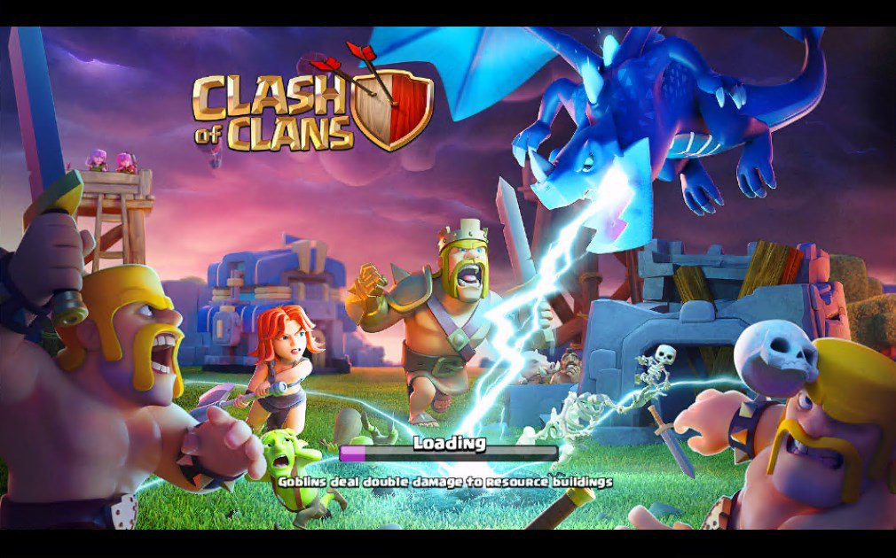

O jogo consiste no desenvolvimento de uma vila nomeada, com o objetivo de melhorá-la e torná-la capaz de defender-se de ataques de outros jogadores. Em 2014 a Supercell Introduziu no jogo o modelo de Guerra entre Clãs, que aprimorou ainda mais a competitividade entre os players ao redor do mundo. Essas vilas tem como finalidade combater com outros jogadores para evoluir seu clã e sua própria vila. Com a atualização 8.332.9, foi introduzido o sistema de ataque entre companheiros do mesmo clã, assim tornando o jogo com uma dinâmica mais moderna, para também decidir rivalidades dentro do clã e mais importante como um treinamento de estratégia, que seriam usadas na guerra e sem haver nenhum custo no elixir e nenhuma despesa para o que recebe o ataque, onde o ataque só deve ser permitido com a decisão do dono da vila que irá receber o ataque.